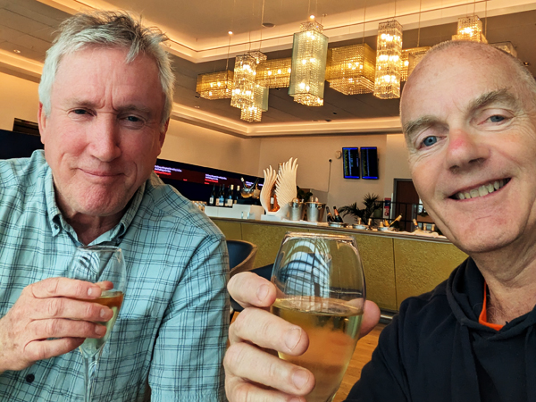
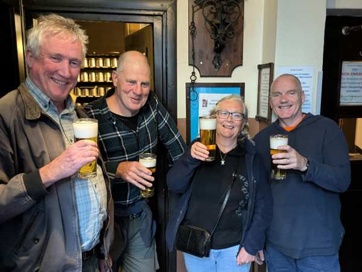
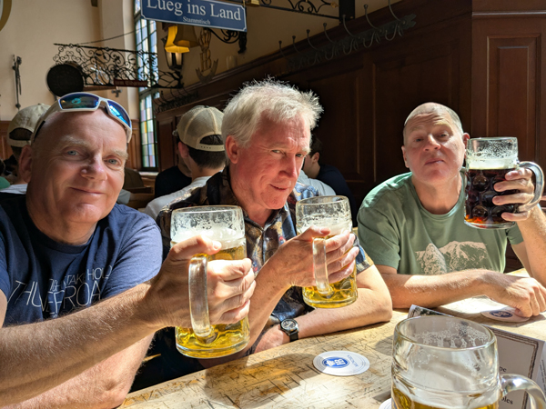
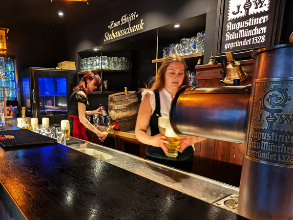

Sunday 18th May Due to me not knowing whether or not I would be able to make this trip until nine days ago, Roz and I had not only ended up booking different flights but were flying from different airports. Roz was booked on the 08:30 Easyjet flight from Gatwick and I was booked on the 08:15 BA flight from Heathrow. Not ideal!
This all meant a very early start. We were up at 04:00 and left Kingsclere about 20 minutes later. I drove Roz to Gatwick, dropped her at the South Terminal car park and then drove back to Heathrow. All quite straight forward at this time of day and by 6:20, I had left the car with Meet and Greet and entered the terminal. I was booked on the same flight as Ed. He is now a gold card holder and by the time I got to the airport, he was already in the first class lounge. I rang him when I had got through security and I was able to go and join him.

Being in the lounge meant free breakfast as well as Champagne and a Bloody Mary before boarding. All very civilised! Reluctantly, we left the lounge at 7:20 and went to board the plane which left on time.
We landed in Munich at 10:40, about 30 minutes earlier than expected. After getting through immigration, we went and met Hoggy by the S-Bahn entrance. Roz had been due to land at the same time as me but her plane was still waiting for a gate so the three of us went to Airbräu for our first beers of the trip. Roz joined us about 30 minutes later and we had another beer before getting the S-Bahn into Munich.
We got the train to Hauptbahnhof. It was too early for Hoggy and Ed to check into their hotels so we walked to the Löwenbräukeller for lunch. Roz and I checked into the Ibis on the way and dropped off our bags. After eating, Hoggy and Ed went to check in and we returned to the room for showers.

We all met up again in the Augustiner Stammhaus and stayed in there for over three hours. From there we walked to the tap room which was very good. We were the only ones in there for a lot of the time and as usual, the beer was very good. We had three rounds in there and things started to go downhill a bit. We got an S-Bahn to Hackerbrücke and walked to the Augustiner-Keller where we had arranged to meet Regan. He eventually turned up at about 10:30 and we all stayed in there until it closed at midnight. The walk back to the Ibis is a bit of a vague memory.
Monday 19th May We did not wake up until about 10:00. I went out to buy stuff for breakfast which we ate in the room. We went out again at about midday and bought lunch to eat sat in Karlsplatz. We walked through the Marienplatz and on to the Viktualienmarkt where we met the others at 1pm. We had a litre each in there (apart from Roz who had a radler) while trying to work out where we were going for the rest of the day.

We eventually decided to go to The Hofbräuhaus for one and then got a tram from Isartor to the Augustiner-Keller. We had a couple of hours in there before going to the Augustiner Bräustuben. This place is not as good as it used to be but was still nice enough for a drink. We did not eat there but walked to Bavaria instead for food. Ed had had enough by this stage and went straight home. Regan had also had enough and was asleep by the time he had finished his food. He was incapable of getting himself home so Roz and Hoggy took him back while I walked to the tap room.
After they had rejoined me, we had one in there before going to Das Paulaner im Tal(Pig Pub). We had a final couple of beers there before walking home, marginally less pissed than last night.
Tuesday 20th May We went out to BackWerk for breakfast before returning to the hotel for showers. We were due to meet up with everyone at the Chinese Tower beer garden. We left the hotel again at 11:30 and walked round to Sendlinger Tor before walking through the old town and out to the English Garden. Everyone was just about on time this year and by 1pm we had started drinking again.

We had a couple of litres there and then got a bus to two of the Paulaner establishments. First stop was Paulaner am Nockherberg and then we got onto the same bus again to get to the Paulaner Bräuhaus. After one in there we got onto the 58 bus for the third time and stayed on it to a U-Bahn station. We got the train back to Marienplatz and went to a small bar near the Viktualmarkt that we had not been to before. "Zum Stiftl Stehausschank" was another Augustiner bar that served the beer straight from the barrel. We were all quite content in there and stayed for about three and a half hours. We abandoned the idea of going out for a meal and had a couple of trips out for sausages instead.
I don't remember leaving the bar but it would appear that we went for a final beer in The Hofbräuhaus before walking back to the hotel.
Wednesday 21st May A fairly uneventful trip home. Roz, Ed and myself were all on the 12:50 BA flight back to Heathrow. We were back in Kingsclere by about 3:30.